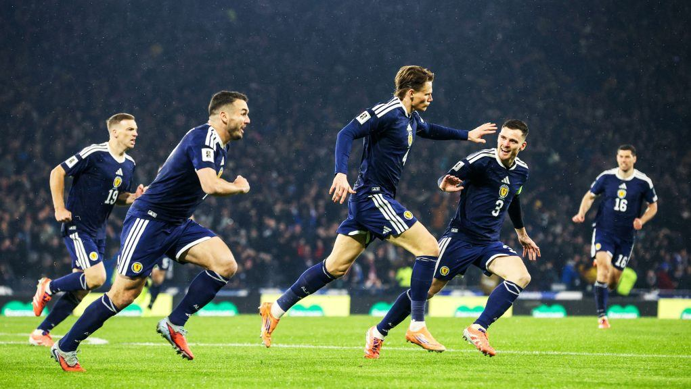

After a dramatic win over Denmark, Scotland qualified for the 2026 Men’s World Cup, sparking celebrations across the country. Fans sang in the streets, and one local pub offered free pies for a week, declaring it “the best day since we invented deep-fried pizza.”
